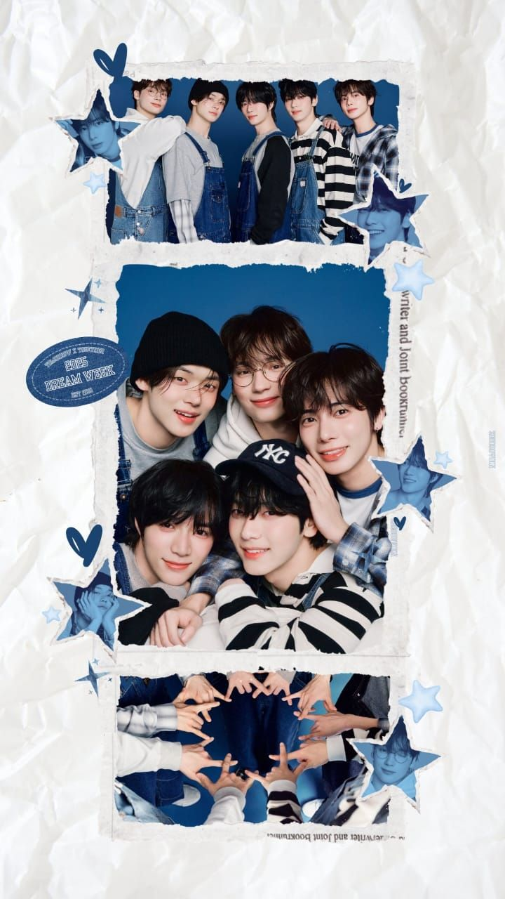

MI PAGINA PERSONAL

YO SOY...
Hola mi nombre es Quetzalli Hernandez Juarez,naci el 1 de enero de 2009 tengo 16 años soy estudiante del cecyt no.3 "Estanislao Ramirez Ruiz" actualmente curso el segundo semestre y estoy pensando en elegir el proximo semestre la carrera de aeronautica aunque lo que realmente me gustaria estudiar es medicina en especial cirujia cardiotoracica,yo creo que la medicina es de las carreras mas hermosas, algo que no tiene limites y que es una gran dedicacion no cualquiera puede pero yo quiero ser alguien brillante y relizarem como una gran cirujana ese es mi gran sueño desde prequeña me he considerada alguien muy perfeccionista, creatriva y que le encanta socializar

MI FAMILIA
Mi familia es una parte muy importante de mi vida cuando naci yo era alguien muy esperada por mi madre y aunque hubo algunas complicaciones durante el embarazo mi madre nunca renuncio en tenerme, mi padre es alguien muy amoroso y cariñoso yo diria que hasta de mas, tengo dos hermanos con los que he convivido desde que naci, mi hermano menor es alguien a quien quiero mucho aunque siempre estemos peleando cada que el cumple algo me siento orgullosa de el dentro de unos meses el entrara a la preparatoria y justo tenia que ser a la vocacional 3 estamos juntos desde el kinder pero bueno si es lo que el quiere esta bien
Por otro lado mi hermano mayor es una de mis personas favoritas siempre me ha cuidado y ha estado para mi, con el he compartido desde chiquita gustos ta vez no lo sepa pero realmente lo veo esa persona con la que me siento tan bien sus consejos, he visto como ha crecido tan bien el y como poco a poco se va haciendo una persona mas independiente

MIS AMIGOS
Cuando era mas chica era alguien demasiado introvertida y muy callada pero cuando entre a la secundaria empece a conocer a mis amigos con los cuales me desenvolvi muy rapido, aunque claro no con las personas que hable primero fue con quien al final termine, mis amigos son personas muy alegres a quien de verdad considere como mis verdaderos amigos era mi mejor amiga Frida y mi mejor amigo Dominic en la secundaria comparti muchos momentos con ellos, dominic y yo eramos parte de la escolta asi que nos volvimos mucho mas cercanos es alguien que sabe escuchar y que sabes que no te va a traicionar, por otro lado frida mi persona con quien pase grandes momentos feiices siempre estabmos juntas los profesores se sorprendian y preguntaban que donde estaba la otra si no nos veian juntas algo que pienso mucho es que la lealtad, la confianza y sobre todo el respeto es lo mejor en una buena amistad

MI LUGAR SEGURO

Conoci a txt cuando tenia 11 años y desde ahi se volvieron mi grupo favorito y mi lugar seguro muchos tal vez no entiendan mi gusto por grupos de kpop pero yo quiero mucho a esos cinco chicos soobin, yeonjun,beomgyu,taehyun y kai
Txt debuto el 4 de marzo de 2019 bajo la empresa de BIG HIT MUSIC integrada por cinco miembros incialmente fueron comparados con bts porque fueron como los hermanos menores de ellos su nombre es muy significativo TOMORROW X TOGETHER su taduccion seria mañana x juntos aunque hacen referencia a "avanzar juntos con un unico sueño con la esperanza de contruir un mejor mañana" nosotras las fans nos conocemos como MOA "momentos de siempre" por eso es el moanita, yo los conoci con la cancion de blue hour ellos ya llevaban su primer aniversario desde su debut, mi integrante favorito es soobin el lider porque es igual de introvertido pero extrovertido a la vez, mi cancion favorita es farewall neverland,estoy esperando con ansias que anuncien gira y vengan para poder conocerlos con ellos he crecido los conoci cuando tenia 11 y el proximo año cumplo 17 escuchar sus canciones es algo tan magico y agradable cuando me siento mal escuchar sus canciones o ver TODO es algo que me pone feliz, txt es un gran grupo que yo creo que deberian escuchar para mi ellos son los lideres de la 4ta generacion, a mi me encanta escuchar musica ya que me siento en paz yo diria que es de mis pastiempos favoritos al igual que bailar, me encanta bailar y cantar me siento muy libre
https://ibighit.com/txt/